Stellar Wi-Fi 快速安装指南

简介
StellarWi-Fi 应用无线控制三思智能球泡灯，开、关无级调节亮度，可选择自己喜欢的颜色。灯泡内置了20种预设场景。您还可以通过麦克风（仅在 iPhone 上）或是曲库中的歌曲与灯泡互动。
获取应用
iPhone用户在“APP Store”中搜索并安装“Stellar Wi-Fi”或扫描下方左侧二维码，下载应用。安卓用户在Google Play、豌豆荚、腾讯应用宝中搜索并安装“Stellar Wi-Fi”或下方右侧扫描二维码，下载应用。
本地控制
- 将灯泡拧入灯座，打开电源开关。
- 在手机设置无线局域网界面中找到灯泡的Wi-Fi网络，（全彩灯泡的网络名称“SLRG B******”）,并确认连接成功。
- 打开Stellar Wi-Fi应用。它会自动搜索灯泡，连接后的灯泡会出现在类列表中 (显示为它的 MAC地址)。
- 点击灯泡的MAC地址进入控制界面。
- 音乐模式（颜色随音乐而动）
点击屏幕底部音符按钮，搜索喜欢的音乐，感受光随音乐而动的美。 - 麦克风模式
点击屏幕底部麦克风按钮，通过声音可与灯泡进行互动。 - 场景模式
点击屏幕底部场景按钮，感受不同颜色不同频率的渐变。

 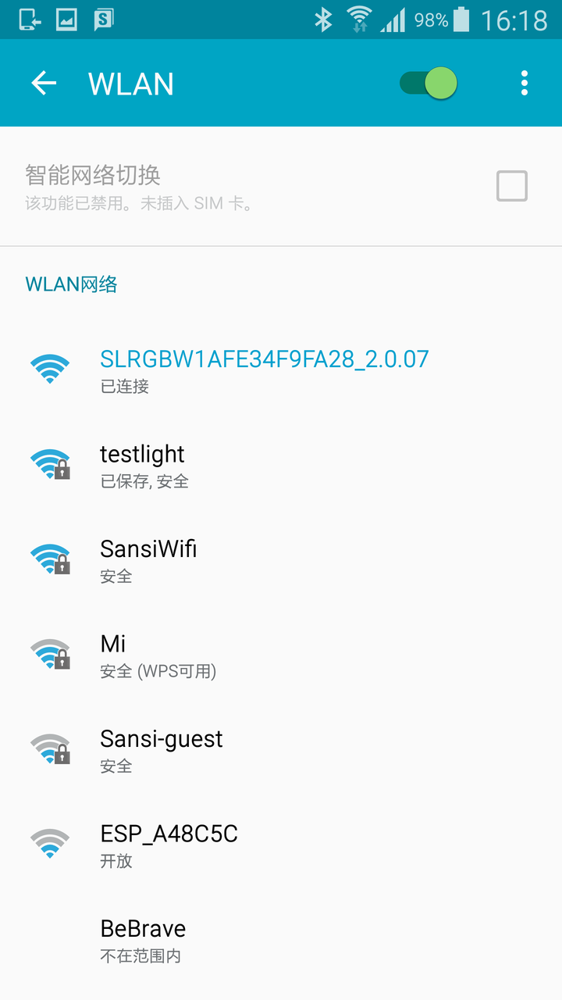
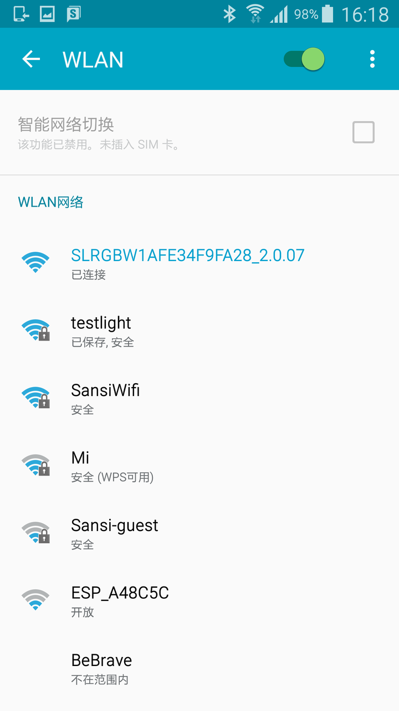
 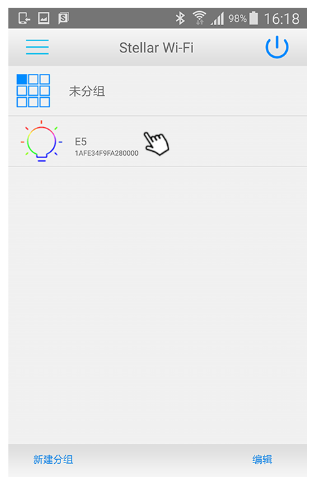
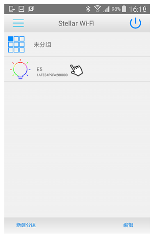
 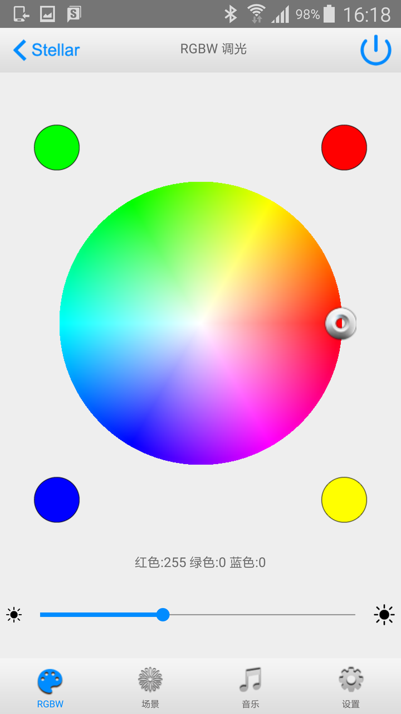
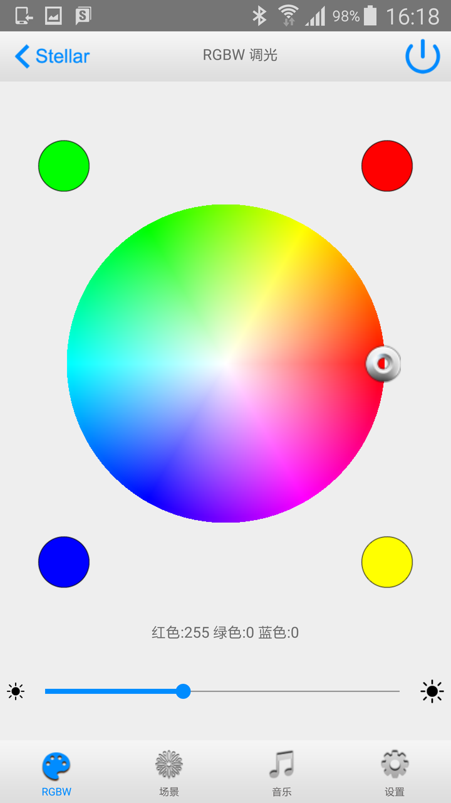
 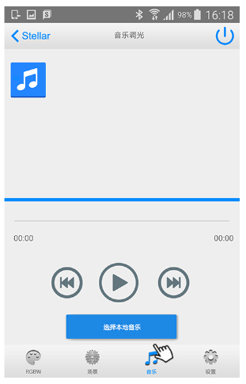
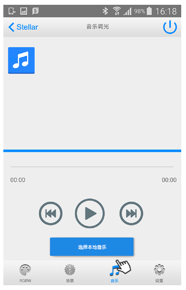
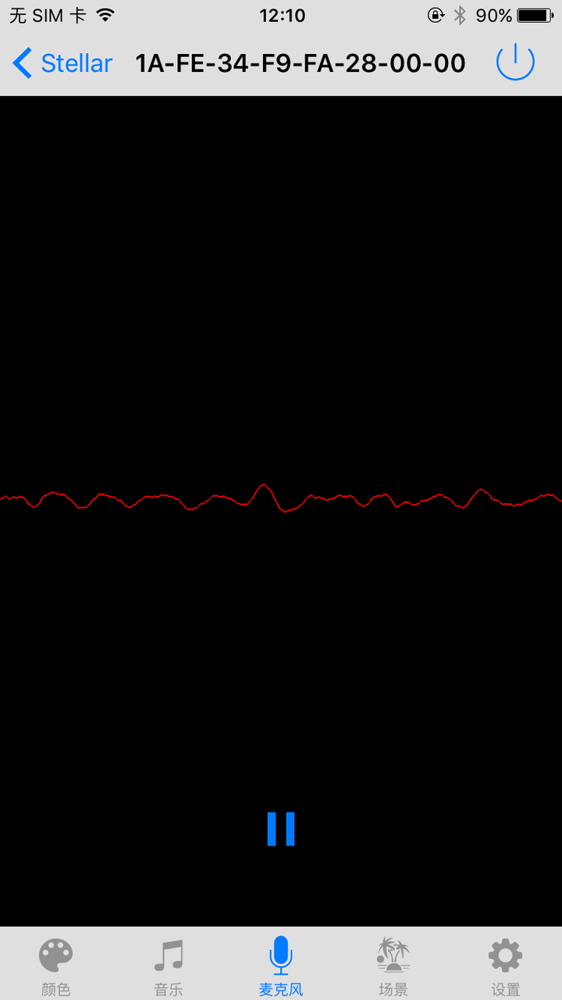
 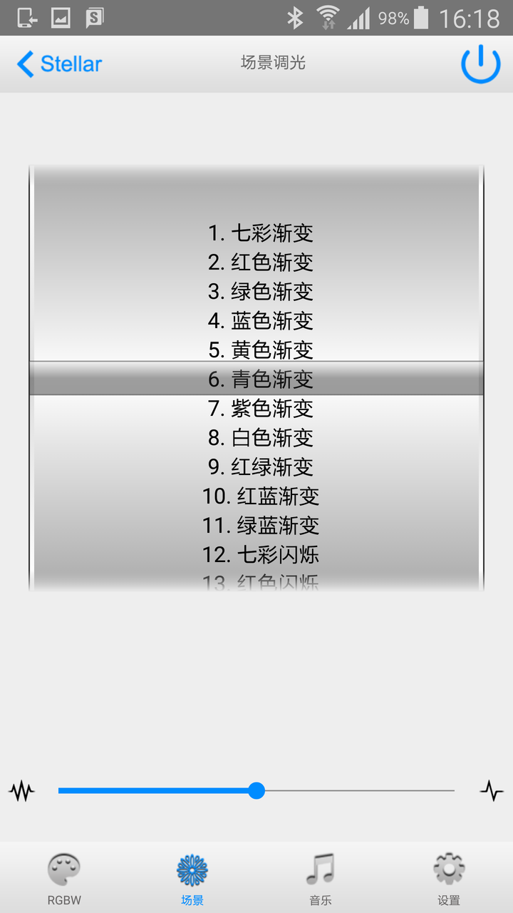
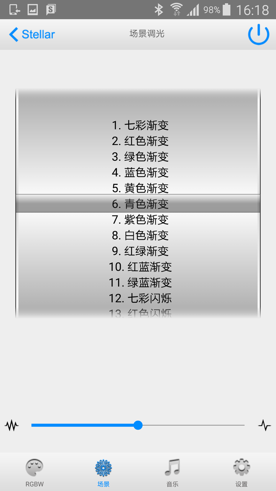
连接多个灯泡
若要同时连接多个灯泡，需将它们加入同一个Wi-Fi网络中，比如您家的路由器中
- 对每个您希望连接的灯泡重复如下操作：
- 连接灯泡，点击屏幕底部右下角设置按钮。
- 灯泡进入“设置”页面，可更改灯泡的名称。
- 添加无线网络的名称和密码，点击“加入”按钮。
- 灯泡将重启并连接至网络，此时您可以继续添加其他灯泡。
- 将手机连接到灯泡已加入的Wi-Fi网络。
- 打开Stellar Wi-Fi应用，等待它搜索全部灯泡。
 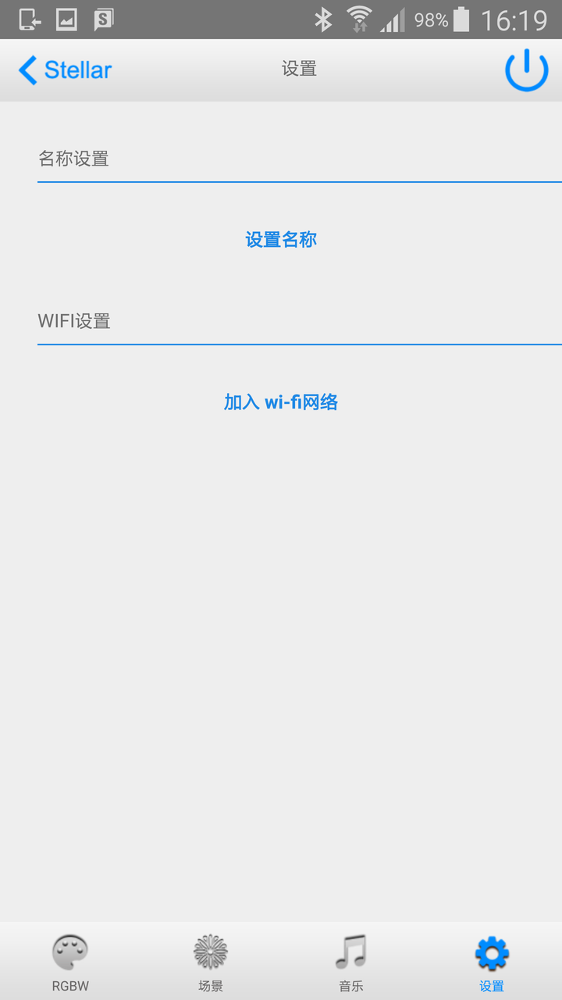
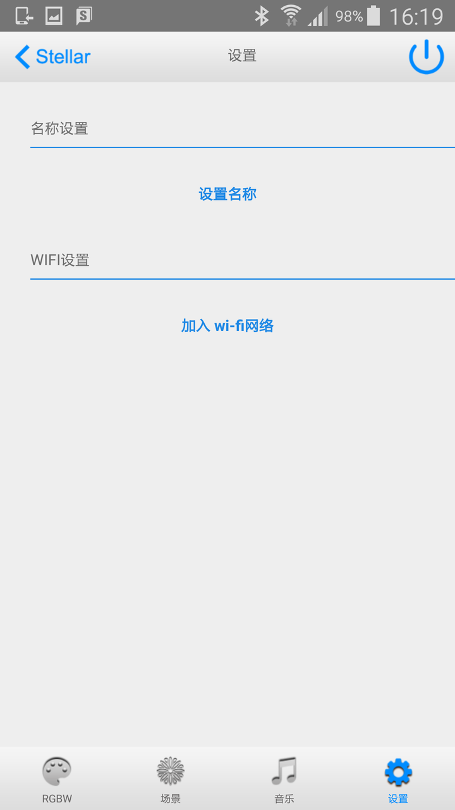
远程控制
- 远程控制连接前确认灯泡和手机均已连接网络。
- 点击列表左上角菜单，显示控制切换界面。
- 选择远程控制，弹出登陆界面。
- 输入邮箱地址及密码登录。首次使用请 输入邮箱地址，设置一个密码，再次输入密码确认，然后点击注册新建一个账户。
- 成功登陆后显示远程灯列表。
- 切换到本地列表，编辑状态下，可以设定灯是否允许远程控制。
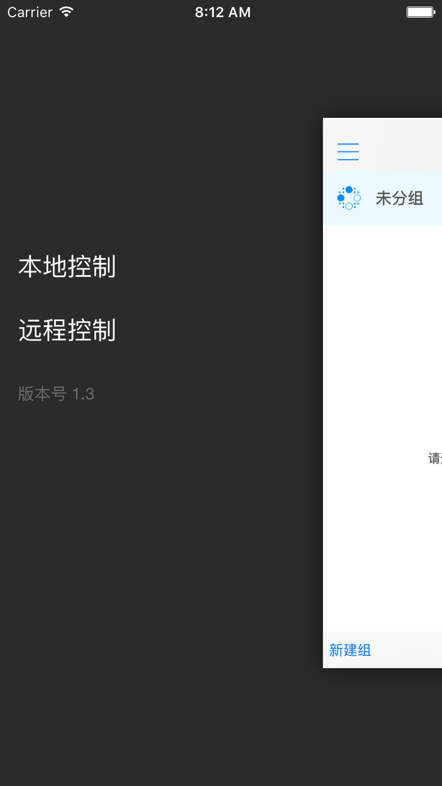
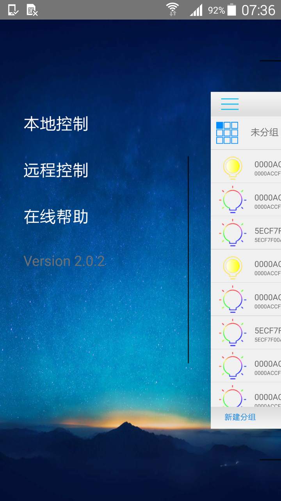
 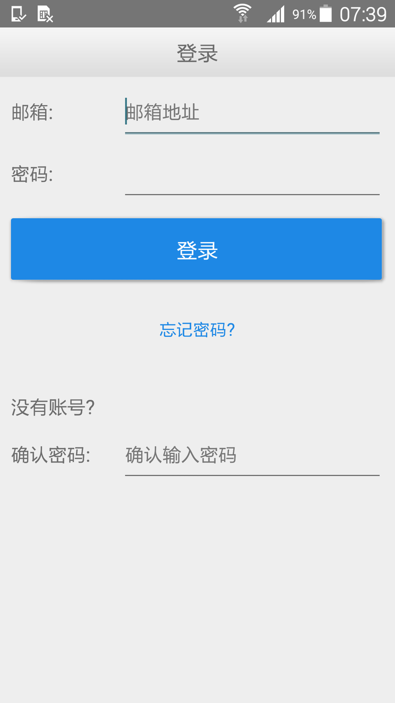
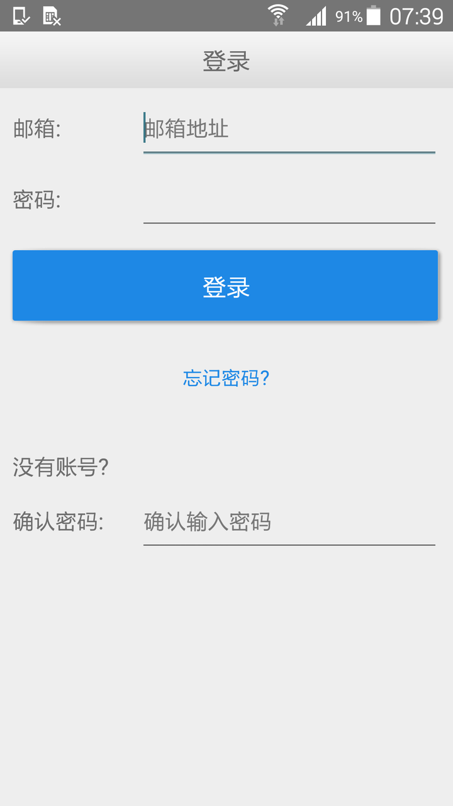
灯泡恢复出厂设置步骤
- 关闭灯泡电源，等待10秒。
- 将下列操作重复3次：
- 打开灯泡电源。
- 当灯泡亮起后，即刻关闭电源。
- 等待4秒。
- 第4次打开灯泡电源，等待30秒。
灯泡恢复出厂设置后，将依照下述顺序变化“红光渐变、绿光渐变、蓝光渐变最后停止为白光”(RGBW球泡灯)并进入Wi-Fi接入点模式。
运行环境需求
Stellar Wi-Fi应用可以在如下平台运行： iPhone 4S及后续机型，运行iOS 8.0及 以上版本。您还需要一个或多个三思智能球泡灯。
联系我们
获取智能球泡灯产品的最新消息，请访问: http://www.sansitech.com；
需要技术支持，请联系: Stellar@sansitech.com；或拨打：400-600-3434。